A digital camera built to replace a film camera — and for a couple of months, it nearly did.
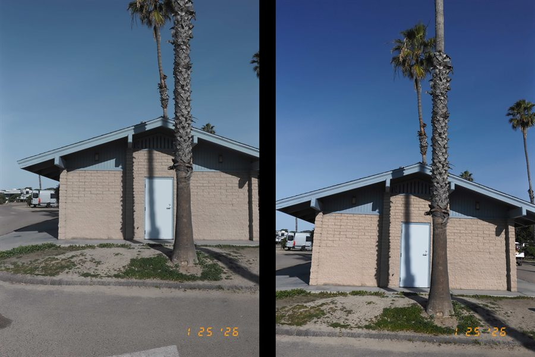
I want to thank the people who let me spend the last couple of months with the Fujifilm X Half. It's a fascinating take on bringing the spirit of film photography into a digital format, and the creativity and craftsmanship behind it comes through fast.
I think of this as a digital camera built to replace a film camera — from a creativity and workflow standpoint, it mostly succeeds. It's fun. It gets out of the way and lets you focus on shooting. I love the simplicity and the lack of buttons — it feels intentional, almost pure.
The viewfinder isn't accurate, though. I'm particular about the edges of a frame — exceedingly careful to keep things out — and more than once, they showed up anyway. The LCD lets the camera disappear nicely, but I still reach for a viewfinder by instinct, so this was the one place the X Half fought my habits instead of matching them.
The field of view runs wide — a little too wide for my taste. Something closer to 50mm would be ideal. Probably not fixable, and it's a personal thing more than a flaw, but it's the one change that would make this camera close to unbeatable for me.
As an eBay Partner, I may earn a commission from qualifying purchases.
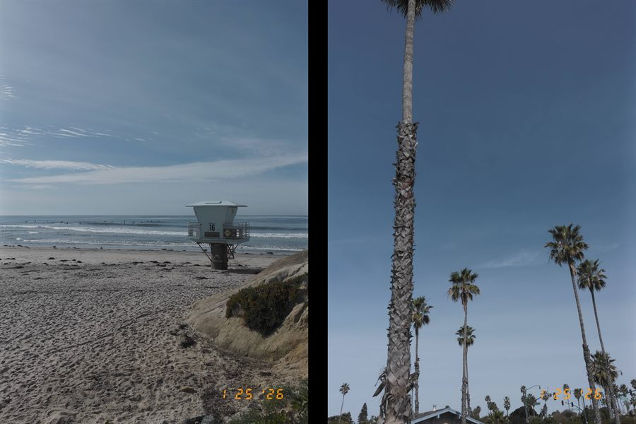
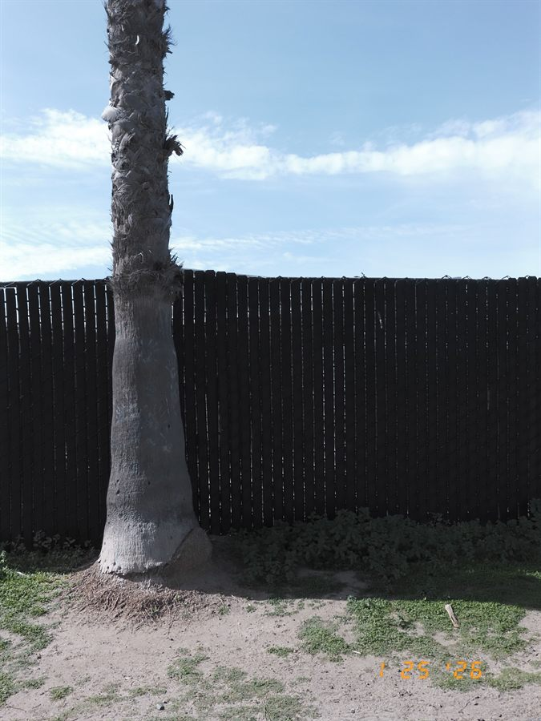
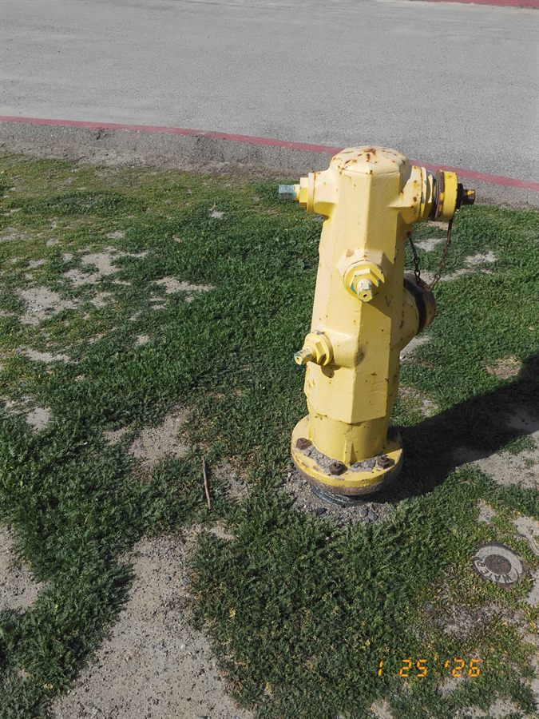
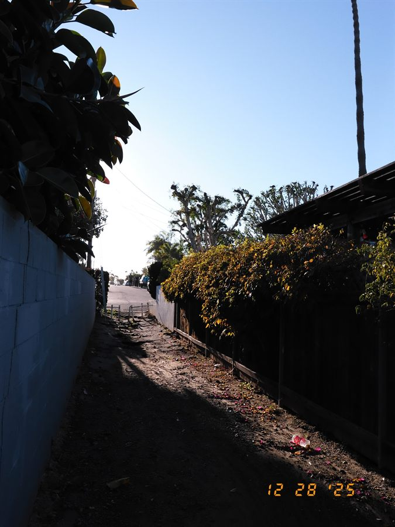
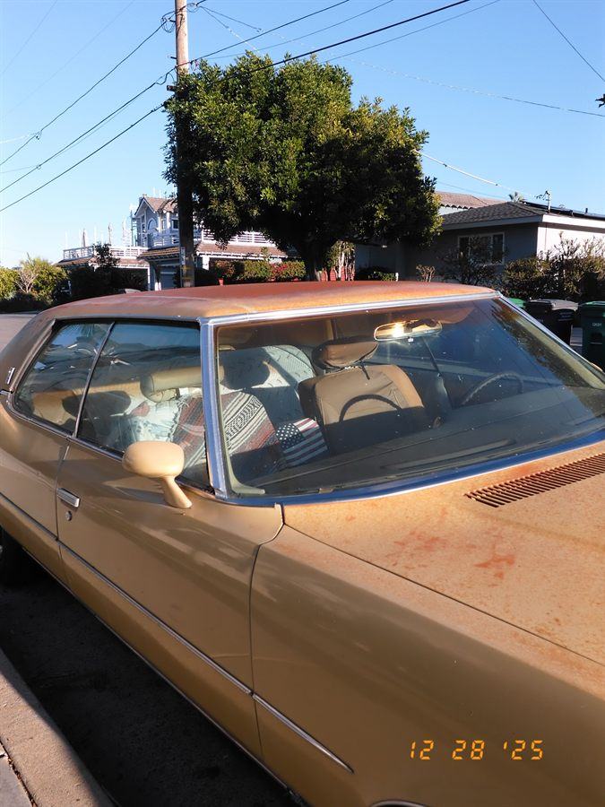
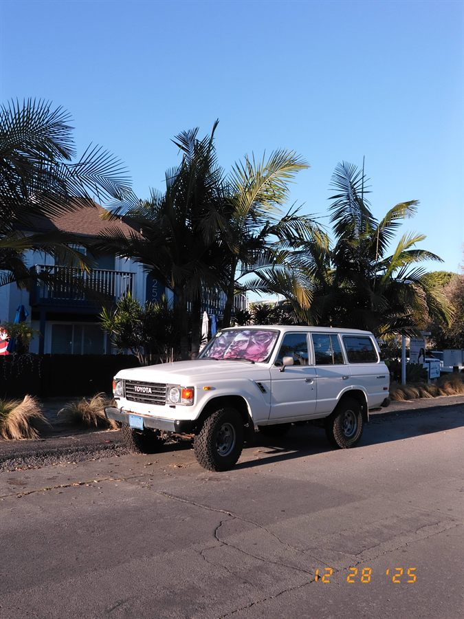
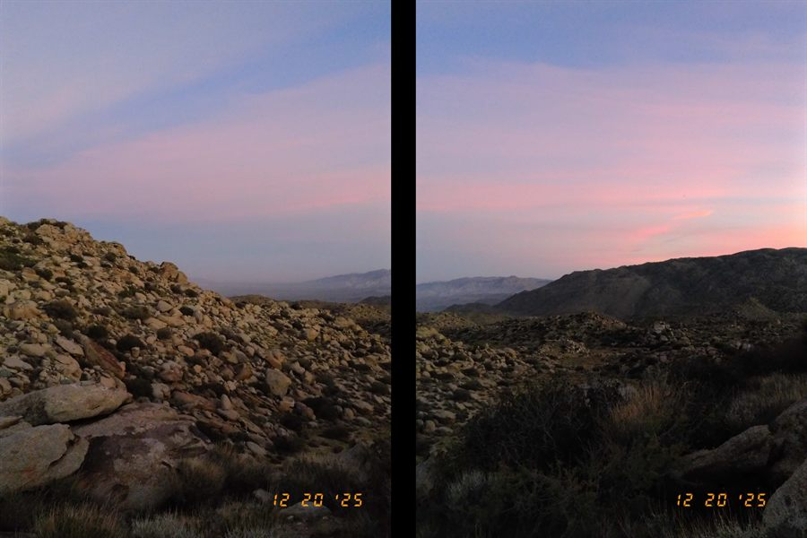
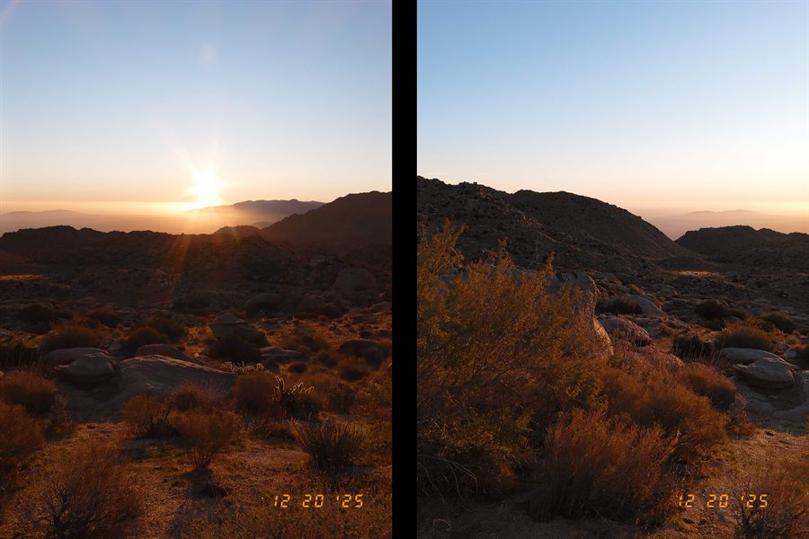
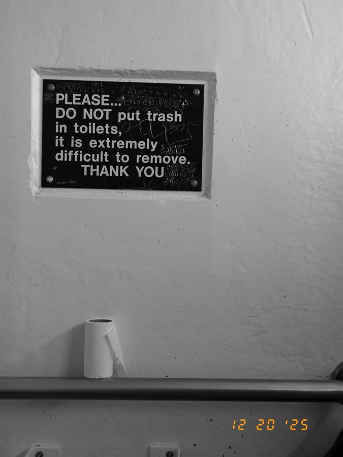
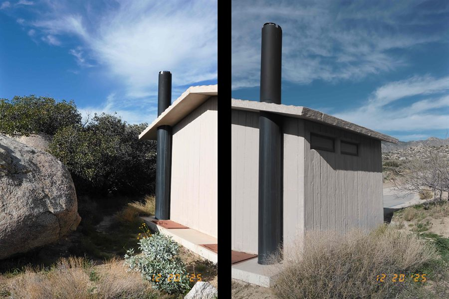